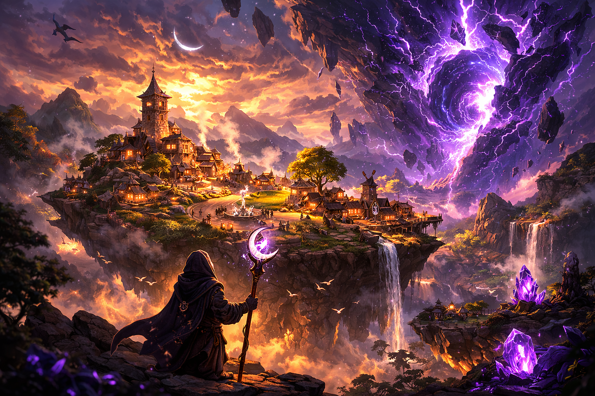
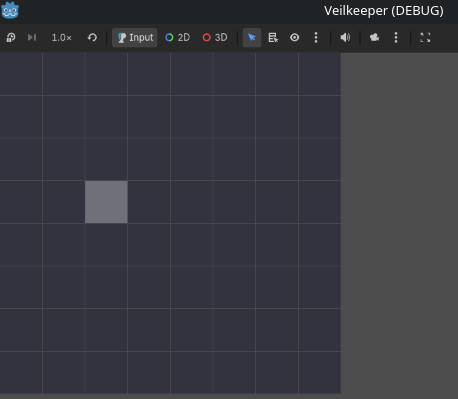

Tactical combat first
Tight positional play on a readable battlefield comes before spectacle, stream tools, or long-term progression systems.

Build a world worth returning to.
Veilkeeper is a tactical RPG about dangerous expeditions, relay networks, and the cost of pushing farther into the rift. Prove the tactics. Grow the shard. Let the community layer come later.
Veilkeeper is in active early development. Visuals, systems, and features shown here are directional and may change as the tactical core gets proven.
The project is being built from the combat layer outward. Each new layer has to earn the right to exist by reinforcing the one beneath it.
Tight positional play on a readable battlefield comes before spectacle, stream tools, or long-term progression systems.
Build, improve, and shape the place your people choose to call home.
Extend your reach through dangerous territory, hold the chain together, and decide which nodes are worth defending.
Viewer characters, stream events, and shared involvement are planned as an additive layer rather than a requirement.
The latest public-facing update from current development.

Latest update
Devlog 02 — Tactical Cursor
Grid highlight now supports mouse, keyboard, and controller.
Units next.
Veilkeeper is being built in layers. Each layer must stand on its own before the next one is allowed to lean on it.
Veilkeeper grows in layers: first the tactical combat, then the shard, then the wider campaign structure, and finally the community layer that sits on top of the game instead of replacing it.
Veilkeeper is built around the tension between presence and absence. You build something, you leave, the world keeps moving, and the choices you made before leaving determine what you come back to.
The fantasy is not just winning fights. It is holding a fragile line, deciding what can be saved, and building something worth defending when you return.
Follow development, track public progress, and keep up with updates as the tactical core takes shape.